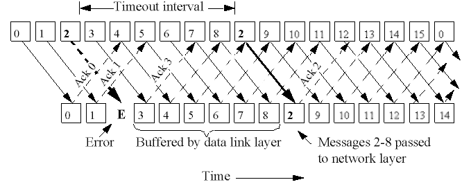

|
||||||
|
Sliding Window Applet |
|||||
|
||||||
To guarantee lossless delivery, a unique (increasing) sequence number (ID) is attached to every message.
The combination of the message's sender address and its ID identifies every message uniquely. To overcome message loss, sender and receiver agree on some start ID, e.g. TCP connection establishment involves the sender
and receiver exchanging their start sequence numbers in the SYN/ACK packets. Now the IDs of messages received from a sender S always have to monotonically increase: if message 56 was received from S, the next message
has to be 57. If a gap is detected, the receiver sends a retransmission request to the sender of the message. Upon receiving a retransmission request, the sender resends the message with the requested ID. Being able to
resend old messages requires the senders to store recently sent messages for some time, usually until it is know that the receiver(s) has/have received all messages below a certain ID. In this case the messages below
this ID may be deleted. When a receiver only sends retransmission requests when a gap is detected, the mechanism is called negative acknowledgment NAK. NAK is used in systems where message loss is infrequent, so NAKs
would only rarely have to be used to retransmit lost messages. When communication links are noisy and loss rate high, ACK schemes are preferred: a sender has to receive an acknowledgment from each receiver
of a message. If ACKs are not received, the message is resent until an ACK has been received. The idea of sliding windows is to keep track of the acknowledgements for each ID. However, a scheme in which a
sender send a single message (e.g. to multiple receivers in a group) and then waits for all ACKs is to slow: a sender should be able to send a number of messages and a separate thread should receive ACKs, and resend
messages with ACKs missing. The senders and receivers each maintain a window of messages for which no ACKs have been received: a window is essentially a sequence of message IDs, starting with a low water
mark and bounded by a high water mark. Whenever an ACK is received, the low and high water marks are advanced by 1, this allows 1 more ACK to be received, therefore sliding the window 1 to the right. When the window is
full, an ACK is either discarded, or some kind of flow control is used to throttle the sender until there is more space available. Sliding windows usually start out with a given size, however, more
sophisticated protocols will dynamically adapt the window size, trying to find an agreed-upon size between sender and receiver. The characteristics of sliding windows used at the sender and receiver
usually involve (but do not have to !)
The latter property can easily be incorporated in a sliding window protocol, but sometimes, it is preferred to be implemented as a separate protocol for easier maintenance / replaceability. |
Sliding window is used by most connection oriented network protocol, among others, the Point-to-Point protocol (PPP) which many people use to establish their home PC as temporary Internet node via a phone-line connection to an existing node. In fact, TCP also uses sliding window.
Sliding Window Protocols The basic idea of sliding window protocol is that both sender and receiver keep a ``window'' of acknowledgment. The sender keeps the value of expected acknowledgment; while the receiver keeps the value
of expected receiving frame. When it receives an acknowledgment from the receiver, the sender advances the window. When it receives the expected frame, the receiver advances the window. |
|||||
One Bit Sliding Window Protocol One bit sliding window protocol is also called
Stop-And-Wait protocol. In this protocol, the sender sends out one frame, waits for acknowledgment before sending next frame, thus the name Stop-And-Wait. Problem with Stop-And-Wait protocol is that it is very
inefficient. At any one moment, only in frame is in transition. The sender will have to wait at least one round trip time before sending next. The waiting can be long for a slow network such as satellite link. |
||||||
If there is one frame k missing, the receiver simply discard all subsequent frames k+1, k+2, ..., sending no acknowledgments. So the sender will retransmit
frames from k onwards. Figure 3-15(a) on page 208. This effectively sets the receiver window size to be 1. This can be a waste of bandwidth. |
||||||
|
||||||
Another strategy is to re-send only the ones that are actually lost or damaged. The receiver buffers all the frames after the lost one. When the sender finally noticed the problem (e.g. no ack for the lost frame is received within time-out limit), the sender retransmits the frame in question. |
||||||
 |
||||||
The main window can be subdivided roughly into four areas:
|
|
|||||
Sender (Area number 2) |
||||||
The representation assumes that the implementation of the Sliding-Window protocol takes place on Stack n. Layer n+1 represents the "data-supplier" for the protocol. It is represented through the text-input-field. One can hand over individual data-packages with the " Step " button. So that the animation speed can be adjusted. By clicking on it with the right mouse button one can choose the protocol to be simulated |
||||||
Receiver (Area number 1) |
||||||
It is similar to the sender. The only difference is that the step button here controls the data transfer from the layer n+1 to the layer n. The received Packetes is presented in the input text field. By clicking on it with the right mouse button one can choose the protocol to be simulated |
||||||
Channel (Area number 3) |
||||||
Represent the network channel. By clicking on it with the right mouse button. One can simulate errors. |
||||||
History-Chart (Area number 4) |
||||||
One can adjust the number of messages to be displayed in this area. |
||||||